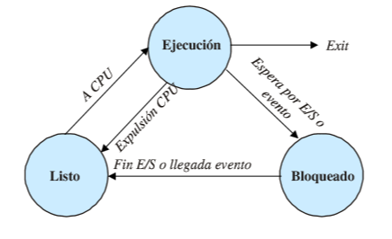
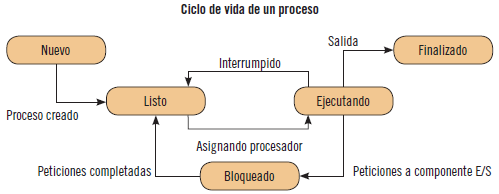
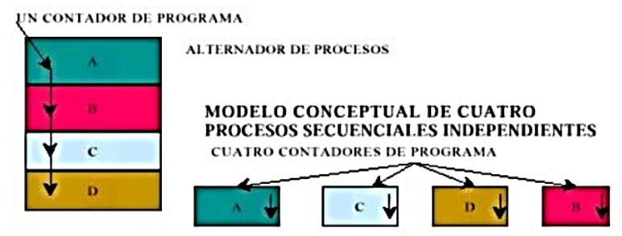
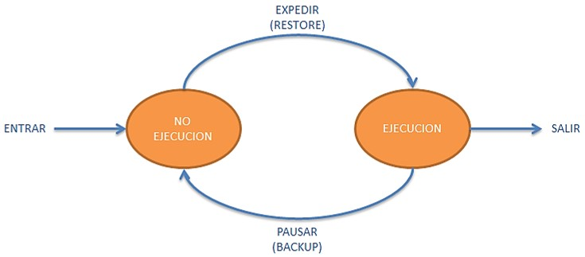
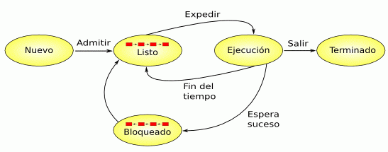
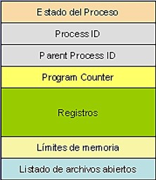
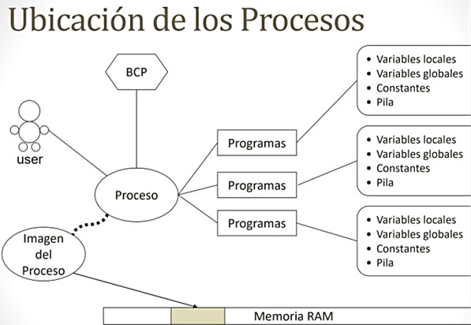

Modulo 5
Recursos administrados por el OS
Control de procesos
14-05-2022
Los procesos de un OS se pueden entender como la ejecución de un programa, pero formalmente en informática se le conoce como una unidad activa que se caracteriza por la ejecución de secuencias de instrucciones, un estado actual, y un conjunto de recursos del sistema asociado. El proceso es la constante actividad de un procesador que vaya recibiendo y ejecutando las instrucciones de un programa, cada proceso tiene su contador de programas, registros y variables, aislados de los demás procesos. Los procesos de un OS están formados por instrucciones de un programa destinadas a ser ejecutadas por el microkernel, su estado de ejecución en un momento dado, su memoria de trabajo (memoria critica) y entre otra información que permite al OS su planificación.
|  |  |
Modelos de procesos
Antes de pasar a los modelos es importante destacar aspectos que caracterizan a los procesos, como un proceso es una actividad de un cierto tipo, que tiene un programa de entrada, salida y estado, este incluye al programa en ejecución y a los valores activos del contador, registro y variables de este. Por decirlo de alguna manera cada proceso posee su propia CPU virtual recibiendo, procesando y ejecutando instrucciones en cuestión de segundos. Un solo procesado puede ser compartido por varios procesos con cierto “Algoritmo de planificación”, que delimita cuando debe detener el trabajo y dar servicio a otro proceso. 
Estado de Procesos
El principal trabajo de un procesador es ejecutar las instrucciones de maquina que se encuentran en la memoria principal. Estas instrucciones se encuentran en forma de programas, y para que este pueda ser ejecutado el OS crea un nuevo proceso, y el procesador ejecuta una por una las instrucciones que llegan al OS. Un proceso puede detenerse, y tiene sentido desde un punto de vista lógico, ya que no se puede continuar por se espera un dato que aun no esta disponible. Como base un proceso tiene tres estados: en ejecución, listo y bloqueado, pero con otros modelos puede tener más.
Sistema operativo de multihilo
Este sistema operativo es el que posee un procesador con varios hilos de ejecución. Un hilo o subproceso es una característica especial que permite a un procesador hacer varias tareas a la vez, estos comparten una serie de recursos durante su ejecución, como: el espacio de memoria, los archivos abiertos, situación de autenticación, etc. El OS se hace cargo de los procesos, recibiéndolos y eliminándolos, pero también se hace cargo de su comunicación entre procesos, solo si se solicita hacerlo. Para un OS de multihilo es posible crear tantos hilos como procesos, y al proceso de creación de otro proceso se le denomina bifurcación, solo que estos son independientes por lo que no comparte memoria con su proceso creador.
Modelos de Estado
Modelo de dos Estados
En este modelo, un proceso tiene dos caminos, se puede o no ejecutar, y cuando se crea otro se pone en estado de “No ejecución”, por lo que en algún momento el proceso actual pasara a ese estado. Cuando el proceso pasa a estado de “No ejecución”, se escogerá otro en orden jerárquico de la lista de procesos listos para ejecutarse, y este pasará en Ejecución. Aquí ya se ve el orden y organización monstruosa que lleva el sistema operativo, teniendo el control del estado actual de todos los procesos, y guardándolos en algún lugar de la memoria hasta que estén listos para ejecutarse.
Modelo de cinco Estados
El modelo anterior es perfecto para procesos con una planeación rotatoria que aún no están en ejecución, pero si listos para ser ejecutados, pero debido a que los procesos usan datos para operar entre ellos, puede llegar a suceder que no estén listos para su ejecución o que les falte algún suceso para continuar. Es donde destaca este modelo, ya que cuenta con un espacio donde los procesos bloqueados esperan hasta que puedan proseguir así que además de los 3 estados básicos, se cuenta con dos más Nuevo y Terminado. La agregación de estos dos ayuda a la gestión de procesos, ya que los estados de Bloqueado y Listo tiene ambos una lista de espera.| Ejecución | El proceso está actualmente en ejecución. |
| Listo | El proceso está listo para ser ejecutado, sólo está esperando que el planificador así lo disponga. |
| Bloqueado | El proceso no puede ejecutar hasta que no se produzca cierto suceso, como una operación de Entrada/Salida. |
| Nuevo | El proceso recién fue creado y todavía no fue admitido por el sistema operativo. En general los procesos que se encuentran en este estado todavía no fueron cargados en la memoria principal. |
| Terminado | El proceso fue expulsado del grupo de procesos ejecutables, ya sea porque terminó o por algún fallo, como un error de protección, aritmético, etc. |

PCB o BCP (Bloqueo del Control de Procesos)
El Bloqueo del Control Procesos es una ficha que lleva el sistema operativo, que contiene toda la información administrativa de un proceso, esta permite saber en qué parte del código se está ejecuta, el número de identificador, cuanta memoria ocupa, cuáles son los archivos abierto, etc. Esta ficha tiene toda la información necesaria para que el OS pueda funcionar adecuadamente, cuando un proceso acaba, la información almacenada en el Bloque se elimina y puede llegar a ser utilizado para otros procesos. Existe algo llamado la tabla de procesos, y esta posee la ubicación de los PCB de todos los procesos del sistema, gracias a esta el kernel puede conocer el estado exacto de cada proceso.
Estado de un proceso
Durante la existencia del proceso, este pasa por una serie de estados discretos, pudiendo ser varias las circunstancias que pueden hacer que el mismo cambie de estado. Debido a ese acontecimiento se establece dos listas las de “Lista de Listos” para procesos listos y la “Lista de Bloqueados para los “bloqueados”.Lista de listo
Esta lista se ordena por prioridades, debido a que los procesos están esperan ejecutarse en un orden, la asignación que el CPU de al primer proceso de esta lista se le denomina “Despacho” ya que se está ejecutando por una entidad del OS llamado “Despachador”. Cuando se admite un trabajo en el sistema se crea un proceso equivalente y es insertado a la lista de listos.Bloqueados
La “Lista de Bloqueado” a diferencia de la anterior no lleva orden, ya que los procesos que se desbloquean van en el orden según se tiene lugar los eventos que se esperaban. Esta es la única transición de estado iniciada por el propio proceso del usuario, puesto que las otras transiciones son iniciadas por entidades ajenas al proceso.
Actividades del Modulo
|

© 2022 Grupo5
© Derechos reservados